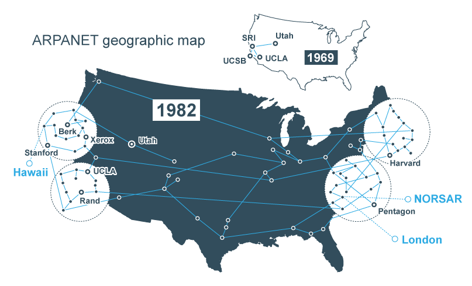

Sou estudante do IFSC-Câmpus Gaspar, atualmente estou na ultima fase do curso de Informática
| Hora | Domingo | Segunda | Terça | Quarta | Quinta | Sexta | Sábado |
|---|---|---|---|---|---|---|---|
| 07:20 - 09:10 | Lazer | Português | Empreendedorismo | Projeto Integrador | Programação para Jogos | Matemática | Lazer |
| 9:30 - 12:15 | Matemática - Enem | Sociologia | Projeto Integrador | Dispositivos Móveis | Projeto de Sistemas | Programação p/ Internet | Português-Enem |
| 13:00 - 14:30 | Matemática - Enem | História - Enem | Fisíca - Enem | Redação | Biologia - Enem e Vestibular | Química - Enem e Vestibular | Português-Enem |
| 14:45 - 17:30 | Geografia - Enem | Filosofia - Enem | Sociologia - Enem | Redação | Literatura - Enem e Vestibular | Física - Enem e Vestibular | Redação - Enem |
| 18:00 - 21:30 | Leitura | Estudo de Programação | Química - Enem e vestibular | Matemática - Enem e vestibular | Geografia - Enem e Vestibular | português - Enem e Vestibular | Biologia - Enem |